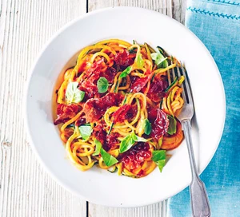

creamy-tomato-courgetti
list with items need to buy
- 4 slices of Parma ham
- ½ small pack basil
- 350g tomato and mascarpone sauce
- 250g pack courgetti
instructions to make that recipe
- Roughly tear the ham and basil.
-
Heat a frying pan over a medium heat and dry-fry the ham until crisp.
- Transfer to a plate with a slotted spoon.
-
Add the sauce to the pan and cook for 1-2 mins, then toss in the
courgetti.
- Cook for 1 min more until warmed through.
- Divide between bowls, then top with the ham and basil.
